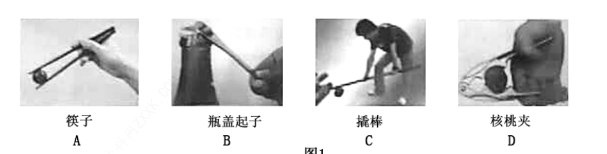

2019年北京市中考物理试题 · 选择题 第1、2、3、4、5题
1．（2分）通常情况下，下列物质属于导体的是（ ）
A．橡胶B．玻璃C．塑料D．金属
2．（2分）下列用电器中，利用电流热效应工作的是（ ）
A．计算器B．电热水壶C．收音机D．电冰箱
3．（2分）下列实例中，为了增大摩擦的是（ ）
A．旱冰鞋下装有滚轮
B．足球守门员戴有防滑手套
C．冰壶底面打磨得很光滑
D．给车轴加润滑油
4．（2分）关于家庭电路和安全用电，下列说法中正确的是（ ）
A．在未断开电源的情况下更换灯泡
B．我国家庭电路的电压为36V
C．在触电事故现场，要立即切断电源
D．用潮湿的手拨动电器设备的开关
5．（2分）如图所示的用具中，在使用时属于费力杠杆的是（ ）
